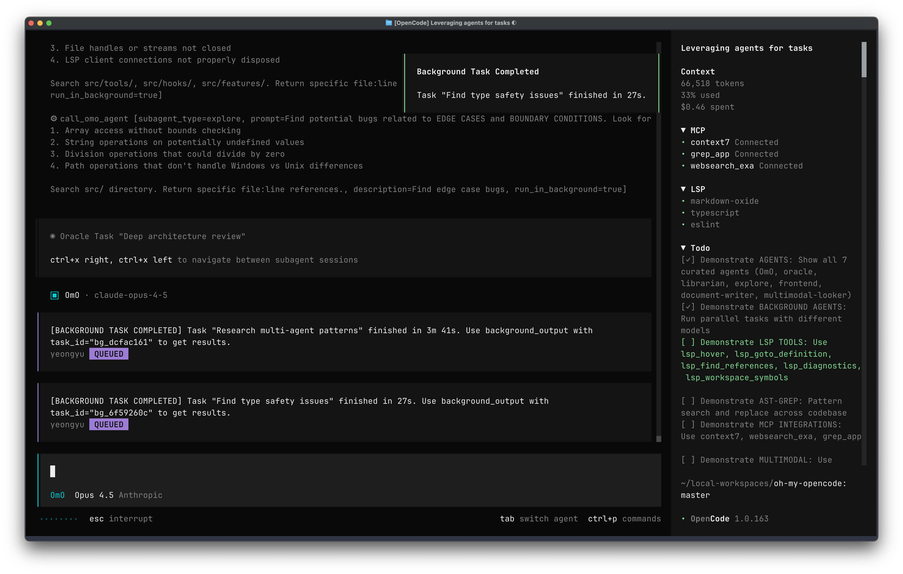

告别 Vibe Coding：用 OmO 构建可靠的 AI 工程系统
引言：AI 编程的范式跃迁
过去一年，AI 编程工具从对话式代码生成器进化为能够自主执行复杂任务的智能代理。但真正的挑战不在于让 AI 写出代码，而在于如何让 AI 持续、可靠地完成工程任务。
Oh My OpenCode（简称 OmO）正是为了解决这一问题而生。它不是另一个聊天框，而是一套将 AI 从"对话工具"升级为"自动化工程系统"的编排框架。

OmO 的核心定位：工程化交付而非对话回答
从"会不会答"到"能不能交付"
传统 AI 编程工具的评判标准是"回答质量"，而 OmO 的核心目标是**“工程交付”**。
OmO 的工作流程遵循"输入 Markdown 描述，输出可运行代码"的心智模型：
1 | |
模式提炼：把 AI 任务从"对话模式"转变为"工作流模式"，每个阶段都有明确的输入、处理和输出标准。
为什么 Vibe Coding 难以支撑复杂工程
OmO 的一个核心立场是：频繁的人类接管，本质上是系统失败的信号。
认知科学视角：人类也无法纠正复杂度的混乱
Vibe Coding 的项目在复杂度扩大到一定程度后，会不可避免地遇到变大、变复杂、变混乱的三重困境。许多人认为"人类可以纠正这种混乱"，但认知科学的研究揭示了一个残酷的事实：人类的认知模型同样存在上下文窗口有限和局部注意力的问题。
认知心理学家 George Miller 在 1956 年的经典论文中提出，人类的工作记忆容量约为 7±2 个信息块（chunks）。后续研究（Cowan, N., 2001, Behavioral and Brain Sciences）进一步表明，当任务涉及复杂的逻辑推理时，这个数字会下降到 4±1。这意味着：
- 人类无法同时跟踪超过 4-5 个相互依赖的变量或模块
- 局部注意力机制让我们只能聚焦于当前正在处理的代码片段，而忽略其他部分的潜在影响
- 上下文切换成本极高——每次切换任务需要 15-25 分钟才能恢复完整的心理状态
这正是 Vibe Coding 让人疲惫的深层原因：它要求人类用自己的有限认知去对抗复杂度的无限增长。当项目规模超过某个临界点，人类和 LLM 一样会陷入"只见树木不见森林"的困境。
认知边界对齐：LLM 的上下文窗口限制不是"AI 的缺陷"，而是"复杂系统的共性"——人类和 AI 都无法在单次认知活动中处理无限复杂度。工程化解法的核心不是"让 AI 变聪明"，而是"让任务变小"。
工程化的核心解法：分治与局部治理
一个好的工程化方案，应该承认并尊重认知边界的存在，而不是试图突破它。其核心原则是：
- 分割任务：将大任务拆解为可在单一上下文窗口内完成的原子任务
- 小上下文窗口配小任务：每个任务的工作集（working set）应该能被完整加载到认知范围内
- 大规模分治推进：通过明确的契约和接口，让各个小任务能够独立验证、独立交付
这背后的工程哲学是：所有局部的混乱都应该能得到快速反馈，并且容易治理。当一个构件（component）在一个严谨的管理框架下有序执行时：
- 错误被限制在局部：一个模块的失败不会扩散到整个系统
- 反馈周期极短：build/test/LSP 验证在秒级或分钟级完成
- 治理成本可控：修复一个小模块远比重构整个系统简单
这正是 OmO 的设计出发点：不是让 AI 变得更聪明，而是让工程系统变得更可分治。通过 harness 机制、Agent Team 分工、验收标准约束，把"无限复杂度的项目"拆解为"有限复杂度的任务流"，让每一个任务都能在人类的认知边界和 LLM 的上下文窗口内被可靠地完成。
Vibe Coding 的工程现实
- 需要人盯着输出，随时接管方向
- 出错后靠人补上下文、补 prompt
- 状态主要停留在当前对话窗口
- 拿到的是片段，不一定是完整交付物
真实工程的要求
- 变更要过 build/test/LSP/回归
- 任务可能跨数小时甚至跨多天推进
- 失败后能继续，不是全部重来
- 完成必须有清晰的 done 定义和验收标准

失败恢复设计：复杂系统必须具备"断点续传"能力——任务中断、失败后能够从上次状态恢复，而非从头开始。
Vibe Coding 的五重工程困境：深度反思
Vibe Coding 并非一无是处——对于制造原型、验证想法、从零搭建新产品，它有独特的价值。但一旦进入存量系统的持续演进，它就会暴露出三个根本性的工程困境。
困境一：上下文窗口与 SDLC 的"无限接力"天然矛盾
LLM 的工作单元是会话（session），而软件开发生命周期（SDLC）的工作单元是项目（project）——两者的时间尺度完全不同。
Anthropic 在其官方工程博客中将这一矛盾描述为长期运行 Agent 的核心挑战：
“The core challenge of long-running agents is that they must work in discrete sessions, and each new session begins with no memory of what came before. Imagine a software project staffed by engineers working in shifts, where each new engineer arrives with no memory of what happened on the previous shift.”
— Anthropic Engineering: Effective Harnesses for Long-Running Agents
这正是 Vibe Coding 让人焦虑的根源：人类被迫充当"上下文接力员"。每当会话窗口接近上限，就必须手动整理进度、补充背景、重新建立 AI 的工作状态。Thoughtworks 的实验也印证了这一点：
“Contextual awareness is limited. Even with tools like MCP servers, the AI often lacked persistent awareness across sessions. Simulating brownfield development — by starting new chats — often erased prior context, requiring re-explanation.”
没有 harness/checkpoint 机制，跨上下文窗口的工程接力就无从实现。人类不得不随时待命、随时介入，这本质上是把 AI 的架构缺陷转嫁给了人类的注意力。
困境二：单窗口无法支撑多角色并行协作
传统 Vibe Coding 的工作模式是单一对话窗口 + 通用模型，这意味着：
- 所有任务由同一个"角色"处理，无法针对不同任务激活不同的专业能力
- 任务只能串行推进，无法并行展开
- 没有角色分工，就没有关注点分离，也就没有可组合的专业化输出
研究已经证明，Role/Persona 对 Agent 行为有显著影响。不同的系统提示词会让同一个模型产生截然不同的推理路径、关注重点和输出风格。Microsoft Azure 的官方架构指南明确指出：
“Multi-agent systems divide responsibilities across multiple specialized agents. This enables modularity, clearer separation of concerns, and improved scalability.”
单窗口 Vibe Coding 的本质是"一人公司"——所有角色由一个人扮演。而真正的工程交付需要的是"分工协作的团队"。
困境三：缺乏工程契约，导致任务不可拆解、不可管理
Vibe Coding 的"done"定义是模糊的——"看起来差不多"就算完成。这带来了一系列连锁问题：
- 没有契约（contract），就没有明确的交付边界
- 没有卡点（checkpoint），就无法实现增量验证
- 没有验收标准（acceptance criteria），就无法判断任务是否真正完成
- 没有可拆解的任务单元，就无法在多个上下文窗口之间分配工作
Thoughtworks 的对比实验给出了清晰的结论：当引入 TDD、增量提交、模块化等工程纪律后，AI 辅助编程的输出质量在可测试性、可维护性、可扩展性等维度上显著提升。
解法不是"更好的 Vibe Coding"，而是引入 Agent Team 模式：
- 用契约（接口定义、验收标准）替代模糊目标
- 用卡点（build/test/LSP 验证）替代"看起来差不多"
- 用专业化 Agent 团队（而非 Swarm 的无序涌现）替代单窗口通用模型
- 用harness 机制（进度追踪、状态持久化、断点续传）替代人类手动接力
Agent Team 与 Swarm 的关键区别在于：Swarm 是无结构的多 Agent 并发，Agent Team 是有角色分工、有内部管道、有任务路由的协作体系。这里的 Swarm 指 OpenAI 于 2024 年开源的轻量级多 Agent 协作框架，其设计哲学是让多个 Agent 自由协商、动态交接任务，但缺乏明确的角色约束和验证卡点。每个 Agent 都有明确的职责边界，任务在进入 Agent 之前会经过提示词增强和意图转化，这使得整个系统的行为是可预测、可审计的。
困境四：缺乏历史架构知识库，面向未来编程能力不足
前三重困境聚焦于"当下任务"的执行层面。但还有一个更深层的困境：Vibe Coding 是无记忆的、无历史的、无方向感的——它只能解读当前代码，却无法理解代码背后的演进脉络，更无法从旧代码中导出软件的发展方向。
这对 legacy 项目（存量系统）的伤害尤为致命。Val Town 工程博客一针见血地指出：
“When you vibe code, you are incurring tech debt as fast as the LLM can spit it out.”
SonarSource 的行业调查进一步量化了这一问题：88% 的开发者报告 AI 对技术债务产生了至少一项负面影响，其中 53% 的人指出 AI 生成的代码"看起来正确但实际上不可靠"。这正是因为 AI 在没有历史架构知识的情况下，只能基于当前代码的表面结构进行推断，而无法理解：
- 为什么某个模块被设计成这样（架构决策的历史原因）
- 哪些地方是不能动的（隐含的业务规则和技术约束）
- 系统未来应该往哪个方向演进（技术愿景和架构演进路径）
代码能表达"是什么"，但无法表达"为什么"和"往哪里去"。这两个维度的知识，只存在于工程师的脑子里、散落在文档系统里、或者根本没有被记录下来。
解法：SDD + SDLC 驱动的知识沉淀
Martin Fowler（Thoughtworks）在 2025 年 10 月提出了 Spec-Driven Development（SDD） 的系统性定义：
“Spec-driven development means writing a ‘spec’ before writing code with AI (‘documentation first’). The spec becomes the source of truth for the human and the AI.”
— Martin Fowler, Understanding Spec-Driven-Development, 2025-10-15
GitHub 工程博客则进一步将这一理念推向了更高的层次：
“In this new world, maintaining software means evolving specifications. The lingua franca of development moves to a higher level, and code is the last-mile approach.”
SDD 的核心洞见是：代码不再是真相的来源，意图才是。当我们用规格说明（spec）来驱动开发时，工程师被强制扮演"项目负责人"的角色——不只是写代码，而是要思考：
- 过去：这个系统是怎么演进到今天的？有哪些架构决策记录（ADR）需要保留？
- 现在：当前需求的边界在哪里？验收标准是什么？
- 未来：这次变更会如何影响系统的演进方向？哪些约束不能打破？
这种思维方式的转变，让 Agent 在工作时不再是"盲人摸象"——它有了历史地图（spec + ADR），有了当前坐标（验收标准），也有了方向感（技术愿景）。
OmO 的 AGENTS.md 正是这一理念的具体实践：它不只是告诉 Agent"代码在哪里"，更告诉 Agent"为什么这样组织"、“哪些是反模式”、“未来的演进方向是什么”。这使得每一次 Agent 工作都能站在整个项目的历史和未来视角上，而不是只看当前窗口里的代码片段。
困境五：缺乏自动纠偏机制与工程级 Rules 体系
前四重困境都指向"如何让 AI 做得更好"，而第五重困境则指向一个更底层的问题：当 AI 做错了，谁来发现？谁来纠正？
Vibe Coding 的纠偏机制是人类——人盯着输出，发现问题就接管，靠人的注意力来兜底。这在原型阶段尚可接受，但在持续演进的工程系统中，这种模式有一个致命缺陷：模型的偏差会被悄悄放大，直到积累到人类无法忽视的程度才被发现。
这不是模型能力的问题，而是系统设计的问题。任何复杂系统——无论是分布式计算、金融交易还是航空控制——都不会依赖单点的人工监督来保证正确性。它们依赖的是内建的自动纠偏机制：
- 多重校验（cross-validation）
- 异常检测（anomaly detection）
- 约束传播（constraint propagation）
- 角色互相审查（peer review）
Agentic Engineering 把这一工程原则引入了 AI 协作体系。它需要两个层面的纠偏机制同时运作：
第一层：专门调教过的 Agent 互相监督
在 OmO 的架构中，不同 Agent 承担不同的角色，这种角色分工本身就是一种纠偏机制：
- Sisyphus 作为编排器，不直接写代码，而是验证其他 Agent 的输出是否满足验收标准
- 验证 Checkpoint 在每个阶段结束时强制运行
lsp_diagnostics、build、测试套件——这是机器对机器的纠偏，不依赖人的注意力 - Intent Gate 在任务入口就对意图进行分析和校正，防止 AI 按字面意思执行错误任务
这种"Agent 互相监督"的设计，让错误在传播之前就被拦截，而不是等到人类发现时已经积累了大量技术债。
第二层：强力的团队大工程 Rules 体系
单靠 Agent 互相监督还不够。真正让系统行为收敛、稳定的，是工程级的 Rules 体系——一套被明确写下来、被所有 Agent 强制遵守的约束规则。
在 Vibe Coding 的实践里，这些规则往往是隐含的、模糊的，甚至根本不存在。工程师凭直觉和经验判断什么能做、什么不能做，但这些判断无法传递给 AI。
Agentic Engineering 把这些隐含规则显式化、结构化：
AGENTS.md/CLAUDE.md：项目级知识库，记录架构约束、反模式、演进方向- 系统提示词中的 Rules：每个 Agent 的行为边界，明确"必须做什么"和"绝对不能做什么"
- 验收标准（Acceptance Criteria）：每个任务的完成定义，机器可判断、可复现
- 工程纪律约束：如"不得修改 public/ 目录"、“不得删除 .deploy_git/”——这些约束被写入 Rules，Agent 无法绕过
这套 Rules 体系的价值在于：它把工程师的集体智慧固化成了系统约束，让每一个 Agent 在工作时都站在整个团队的肩膀上，而不是从零开始摸索。
当 Rules 体系足够完善时，模型的偏差会被多重约束拦截，输出会趋向稳定和收敛。这不是因为模型变得更聪明了，而是因为系统设计让错误更难发生、更容易被发现。
工程化破局的五条路径：Vibe Coding 的五重困境（上下文断裂、单角色串行、目标模糊、历史知识缺失、纠偏机制缺失）对应五个工程解法——harness 机制、Agent Team 分工、ATDD 验收标准、SDD 知识沉淀、Rules 体系 + Agent 互相监督。这五者共同构成了从"对话式 AI 编程"到"工程化 AI 交付"的跃迁路径。
三种协作模式：选择合适的"代理团队"
OmO 提供三种不同的协作姿态，分别适合不同类型的任务：
OmO 的 Agent 团队架构
OmO（现已更名为 omo; the best agent harness，仓库：opencode-ai/oh-my-opencode）的核心设计理念是：用专业化 Agent 团队替代单一通用对话窗口。每个 Agent 都有明确的角色定位、专属的推理预算和职责边界，任务通过内部管道路由到最合适的 Agent，而非由一个"全能选手"串行处理所有事情。
1 | |
Intent Gate 是 Sisyphus 的第一个行为阶段（Phase 0）：它分析用户的真实意图，而非字面请求，避免 AI 按照字面意思执行错误任务，并决定后续的任务路由策略。Intent Gate 通过 Sisyphus 的动态系统提示词（dynamic-agent-prompt-builder.ts）实现，是 Sisyphus 的内建能力，而非独立于 Sisyphus 的预处理层。
值得注意的是，这里的"子 Agent"关系是动态的、任务级别的，而非静态的架构约束。
Intent Gate ≠ “卡点”（Checkpoint）
这里需要澄清一个常见的误解：Intent Gate 和我们常说的"卡点"（checkpoint）是两个不同的概念。
| 概念 | 位置 | 作用 | 时机 |
|---|---|---|---|
| Intent Gate | 任务入口 | 分析用户真实意图，避免 AI 按照字面意思执行错误任务 | Phase 0，任务开始前 |
| 卡点（Checkpoint） | 任务执行过程中 | 强制验证，没有通过就不算完成 | 每个阶段结束后 |
Intent Gate 解决的问题是：AI 极其"字面化"——给模糊指令，它会做技术上正确但意图上错误的事。例如用户说"优化登录流程"，Intent Gate 会分析：这是重构？新增功能？还是 bug 修复？然后路由到正确的执行路径。
而"卡点"解决的是另一个问题：如何确保任务真正完成。它出现在每个阶段结束时，强制运行 lsp_diagnostics、build、测试套件——这是机器对机器的纠偏，不依赖人的注意力。
什么是 LSP diagnostics？
LSP（Language Server Protocol）是 IDE 与语言服务之间的通信协议。当你看到 VS Code、IntelliJ 等 IDE 中出现的红色波浪线——语法错误、类型不匹配、未定义的变量——这些都是 LSP diagnostics 的输出。
与
build（编译整个项目）和test（运行测试用例）不同，LSP diagnostics 是即时、轻量、细粒度的：
- 语法层面：括号不匹配、缺少分号、非法字符
- 语义层面：类型错误、未定义的引用、参数数量不匹配
- 静态分析：未使用的变量、可达性警告、潜在的空指针
把 LSP diagnostics 与 build/test 并列，是因为它提供了一种无需完整编译即可发现大量错误的能力——在 AI 写完代码的瞬间，就能捕获"编译器会拒绝"的问题，而不必等到 build 失败才知道。
OmO 的多层 Gate 体系
OmO 并非只有一个 Intent Gate，而是有一个完整的多层 gate 体系，构成从意图分析到工程验证的完整闭环。
关键澄清：Gate 与 Agent Phase 的关系
这些 Gate 并非独立于 Agent 存在的"外部检查点"，而是特定 Agent 行为阶段（Phase）的具体实现：
| Gate | 所属 Agent | 对应 Phase | 职责 |
|---|---|---|---|
| Intent Gate | Sisyphus | Phase 0 | 意图分类、路由决策，每条消息必经 |
| Metis Gap Analysis | Metis | Prometheus 前置阶段 | 计划前 gap 分析，捕获遗漏 |
| Momus Review | Momus | Prometheus 后置阶段 | 计划审查，验证可执行性 |
| Verification Checkpoint | 执行 Agent | 阶段结束时 | LSP/build/test 强制验证 |
为什么这样设计？
-
Intent Gate 是 Sisyphus 的 Phase 0：Sisyphus 的行为被组织为四个阶段（Phase 0 → Phase 1 → Phase 2 → Phase 3），Intent Gate 正是 Phase 0 的具体实现。这意味着 Intent Gate 不是独立于 Sisyphus 的"预处理层"，而是 Sisyphus 内建的行为规范。
-
Metis + Momus 构成 Prometheus 的"三段式质量链"：当用户进入规划模式时，Metis 先做前置 gap 分析，然后 Prometheus 生成计划，最后 Momus 进行后置审查。这三个 Agent 形成了一条质量保证链，避免"自己审查自己"的盲点。
-
Verification Checkpoint 是执行阶段的硬约束：无论是 Sisyphus、Hephaestus 还是 Atlas，在执行阶段结束时都必须通过 LSP diagnostics、build、test 验证。这不是某个特定 Agent 的 Phase，而是所有执行 Agent 共享的完成标准。
完整流水线示意：
1 | |
这套多层 gate 体系的设计与行业最佳实践一致。Anthropic 在其官方工程博客中提出了类似的 harness 机制，而一位开发者在 DEV.to 分享了 8-gate 质量体系（从需求定义到部署验证）。核心洞见是：单一 gate 无法应对复杂工程任务的不确定性，而将 gate 作为 Agent 的内建 Phase，可以确保每个 Agent 在正确的时机执行正确的检查。
1. Hephaestus —— 深度自治的"正牌工匠"
定位：Deep Agent，擅长 hard problem / 架构 / 深度 debug
推荐模型：
- 首选：Claude Opus / OpenAI o1 / DeepSeek R1 —— 高推理预算的"思考型"模型
- 备选：Claude Sonnet (Extended Thinking) —— 平衡成本与深度
为何这些模型适合 Hephaestus：
Hephaestus 的核心任务是自主解决复杂问题，它需要：
- 长程推理能力：跨多个文件、多个系统边界进行推理，需要模型能够"在脑子里转很多圈"——这正是 o1/R1/Opus 这类"思考型模型"的设计目标
- 自主探索能力：不依赖人工干预，自行搜索代码库、研究模式、端到端执行——需要模型有足够的"解题韧性"，不会轻易放弃或转向错误路径
- 架构决策能力：在模糊的需求中发现关键约束，做出合理权衡——这需要模型有足够的"领域智慧"，而不仅仅是模式匹配
关键洞察：Hephaestus 是"给目标，不给 recipe"的最佳实践者。用户不应该告诉它"先做 A，再做 B，然后做 C"——这种 micromanagement 反而会限制它的能力。相反，用户应该给出"north star"级别的目标描述，比如"让这个模块支持并发访问，保持向后兼容"，然后相信模型有更强的解题能力，让它自己规划路径、探索方案、验证结果。
这背后的原理是：推理模型的价值在于"思考过程"，而非"执行指令"。当你给它 recipe 时，你实际上是在用自己的推理替代它的推理——但你可能遗漏关键约束、错过更优方案。当你给它目标时，你是在让它用自己的推理能力去发现最佳路径。
架构特性：
- 给目标，不给 recipe：接收的是"north star"级别的目标描述，而非分步骤的操作指令；相信模型的推理能力，而非用 micromanagement 限制它
- 自主探索：自行搜索代码库、研究模式、端到端执行，不需要人工干预
- 深度推理：适合需要跨多个文件、多个系统边界进行推理的复杂任务
适用场景：
- 复杂架构推理
- 链路很长的 debug
- 跨技术域迁移
注意事项：问题空间越大，目标不清就会努力错方向。越自主，越要提前写清可量化的验收标准。
2. Sisyphus —— 默认主力模式
定位：主编排器（Orchestrator），大多数复杂任务的默认入口
推荐模型：
- 首选：Claude Sonnet / GPT-4o —— 平衡推理能力与响应速度
- 备选：Claude Opus —— 当编排任务本身需要深度规划时
为何这些模型适合 Sisyphus：
Sisyphus 的核心任务是协调与调度，它需要：
- 快速响应能力：作为入口 Agent，需要快速分析意图、做出路由决策——Sonnet/GPT-4o 在保持高智能的同时响应更快
- 多任务并行管理：同时启动多个后台任务（Explore、Librarian、Oracle），追踪状态、聚合结果——需要模型有良好的"工作记忆"和任务管理能力
- 上下文理解能力：理解需求、识别范围、分配任务——需要模型能够快速"get the picture"，而非深度推理
关键区别：编排 vs 规划：
- Sisyphus（编排器）：关注"如何把事情做完"——理解需求后，快速分配任务、协调资源、追踪进度、验证结果。它的核心是执行效率和任务协调。
- Prometheus（规划师）：关注"应该做什么"——在执行前进行深度分析、识别风险、消除歧义、制定结构化计划。它的核心是规划质量和风险控制。
打个比方：Sisyphus 像项目经理，负责协调团队、追踪进度、确保交付；Prometheus 像架构师，负责设计方案、识别风险、制定蓝图。
架构特性：
- 32k thinking budget：拥有深度思考预算，用于复杂任务的规划和协调
- 责任分离：Sisyphus 本身不直接写代码，而是理解需求、分配任务、验证结果
- 并行委托：可同时启动多个后台任务，让 Explore、Librarian、Oracle 并发工作
- 强制完成：内置 TODO 追踪机制，必须完成所有任务项才能停止（源自希腊神话中西西弗斯推石头的隐喻——永不放弃）
入口：ulw / ultrawork
工作流程：
1 | |
关键价值：帮你组织一支团队把任务做完——Explore、Librarian、Oracle 可以同时工作，把代码证据、文档证据和策略建议带回来。

3. Prometheus + Atlas —— 规划与执行的分离
Prometheus：战略规划者，采用面试式规划
推荐模型：
- 首选：Claude Opus / OpenAI o1 —— 深度推理能力，适合复杂规划
- 备选：Claude Sonnet (Extended Thinking) —— 平衡成本与规划深度
为何这些模型适合 Prometheus：
Prometheus 的核心任务是规划与风险识别，它需要：
- 深度分析能力：在执行前识别隐含需求、边界情况、潜在风险——这需要模型能够"想得很深"，而非快速响应
- 结构化思维：把模糊需求转化为清晰、可执行、可验证的计划——需要模型有良好的"逻辑组织能力"
- 提问技巧：通过面试式对话消除歧义——需要模型能够"问对问题"，而非直接跳到答案
关键区别：规划师 vs 编排师（详细对比）：
| 维度 | Prometheus（规划师） | Sisyphus（编排师） |
|---|---|---|
| 核心关注 | “应该做什么” | “如何把事情做完” |
| 工作时机 | 执行前，制定蓝图 | 执行中，协调资源 |
| 输出物 | 结构化计划（.sisyphus/plans/*.md） |
任务完成状态、验证结果 |
| 核心能力 | 风险识别、歧义消除、约束固化 | 任务分配、进度追踪、结果聚合 |
| 类比角色 | 架构师：设计方案、识别风险、制定蓝图 | 项目经理：协调团队、追踪进度、确保交付 |
| 模型需求 | 深度推理、结构化思维 | 快速响应、多任务管理 |
为什么需要分离规划师和编排师？
在实践中，规划和执行是两种不同的认知模式：
- 规划模式需要"慢思考"——仔细分析、识别风险、考虑边界情况。用 o1/Opus 这类深度推理模型，让它有足够的时间"想清楚"。
- 编排模式需要"快响应"——快速理解意图、分配任务、追踪进度。用 Sonnet/GPT-4o 这类平衡模型，让它能够高效协调。
把这两种模式混在一个 Agent 里，会导致"既想不清楚，又做不快"。分离之后，各自用最适合的模型，整体效率更高。
- 先采访、再落计划：在执行前主动提问、识别范围、消除歧义
- 把隐含需求和关键约束固化到
.sisyphus/plans/*.md，让后续执行不再依赖人脑临场补上下文 - 适合需要前期规划的复杂功能开发
Atlas：执行型子代理，按波次推进
推荐模型：
- 首选：Claude Sonnet / GPT-4o —— 平衡执行效率与代码质量
- 备选：Claude Haiku —— 简单任务的快速执行
为何这些模型适合 Atlas：
Atlas 的核心任务是按计划执行，它需要：
-
执行效率：按照已有计划推进，不需要深度规划——Sonnet/GPT-4o 足够
-
代码质量：写出符合规范的代码——需要模型有良好的"编码能力"
-
断点续传：任务中断后能从上次状态恢复——需要模型能够"理解上下文"
-
/start-work之后按 wave 推进 -
每个 wave 执行、验证、记录 learnings
-
支持断点续传：任务中断后能从上次状态恢复，而非从头开始
适用场景：跨天、高风险、要可审计的长任务

OmO 的 Harness 机制：解决上下文断裂问题
OmO 自称"the best agent harness"，其 harness 机制直接针对 Vibe Coding 的第一重困境——上下文断裂：
- TODO 追踪系统：Sisyphus 必须创建 TODO 列表，每个任务完成后标记，所有 TODO 完成才允许停止
- 验证 Checkpoint：每个阶段结束时强制运行
lsp_diagnostics、build、测试套件，没有通过就不算完成 - 后台任务状态管理：每个后台任务有唯一 ID，支持状态查询和结果聚合
- Ultrawork 模式：在提示中包含
ultrawork或ulw关键词，自动激活并行任务、强制验证、专业 Agent 路由等全套能力
模式选择原则：根据任务复杂度、时间跨度、风险等级选择合适的协作模式——简单任务用 Sisyphus，深度问题用 Hephaestus，长周期高风险任务用 Prometheus+Atlas。OmO 的本质是把"单窗口对话"升级为"有角色分工、有内部管道、有验证卡点的 Agent 工程团队"。
核心差异：OmO 与 Vibe Coding 的本质区别
| 对比维度 | Human-in-the-loop Vibe Coding | OmO 的 long-running 编排 |
|---|---|---|
| 人的角色 | 持续盯盘 / 补上下文 / 接管 | 定义目标 / 边界 / 验收 |
| 状态管理 | 当前会话上下文为主 | plan + boulder + notes + 后台任务（boulder 是 OmO 用于跨会话持久化任务状态的文件，记录当前进度、已完成步骤和待续工作） |
| 失败处理 | 人手动改 prompt | 倾向先自纠偏，再决定是否升级 |
| 完成定义 | 看起来差不多 | test/build/LSP 通过 + 验收标准满足 |
| 输出物 | 代码片段 | 可持续推进的工程结果 |
Manifesto 的关键词：minimum intervention, not constant supervision
关键建议：用 ATDD 的方式使用 OmO
ATDD（Acceptance Test-Driven Development）= 用可执行验收标准驱动计划、实现和完成判断。
四步实践法
1. 先写验收标准（AC）
把行为、边界、指标、回归范围写清。验收标准越具体，代理越不容易努力错方向。
2. 让 Prometheus 把模糊点问清
把隐含需求和关键约束固化进 plan，让后续执行不再依赖人脑临场补上下文。
3. 先准备可执行的判断依据
能写测试就写测试；不能写测试，也至少写出 LSP / build / perf / 业务断言等判断条件。
4. 再选模式推进实现
- Hard problem → Hephaestus（直接对话，给出 north star 目标）
- 大多数复杂任务 → Sisyphus +
ulw（ultrawork关键词激活并行任务和强制验证） - 关键长任务 →
@plan+/start-work（先固化计划，再按 wave 执行，支持断点续传）

验收标准先行：在放权给 AI 自主执行之前，必须先明确"什么叫 done"——可量化、可验证、可复现的验收标准是自主代理的"护栏"。
常见误区：没有验收标准，代理就会推错石头
这是使用 OmO 最容易犯的错误：
| 坏输入（模糊目标） | 好输入（可验证目标） |
|---|---|
| “把登录流程优化一下” | “保留现有 SSO 行为；新增邮箱登录；登录关键路径 E2E 通过；LSP 0 error；关键 API p95 < 200ms” |
| “重构这个模块” | 明确边界、回归范围、性能约束、不能动的部分 |
| “把体验做好” | 定义 test / build / LSP / 性能 / 业务指标 |
核心原则：把 done 写成机器能判断的条件——tests / build / lsp / perf / 业务断言 / 回归范围，都尽量写成能执行、能判定、能复现的标准。
总结：如果今天只记住三件事
-
OmO 的差异不只是"会不会写"，而是"会不会持续推进到完成"
-
越 autonomous，越需要清晰边界和可量化验收标准
-
模式选择：
- Hephaestus → 解 hard problem
- Sisyphus → 覆盖大多数复杂任务
- Prometheus + Atlas → 管高风险长任务
参考资料
- Oh My OpenCode 官方文档：docs/guide/overview.md
- Manifesto：docs/manifesto.md
- Orchestration 指南：docs/guide/orchestration.md
模式速查表
| 模式 | 适用场景 | 核心命令 | 关键成功因素 |
|---|---|---|---|
| Hephaestus | Hard problem / 架构 / 深度 debug | 直接对话 | 清晰的 north star 和边界 |
| Sisyphus | 大多数复杂任务 | ulw / ultrawork |
Intent Gate + 并行证据 |
| Prometheus+Atlas | 跨天/高风险/可审计任务 | @plan + /start-work |
先固化 plan，再按 wave 执行 |
| ATDD 实践 | 所有模式通用 | — | 先写验收标准，再放权执行 |